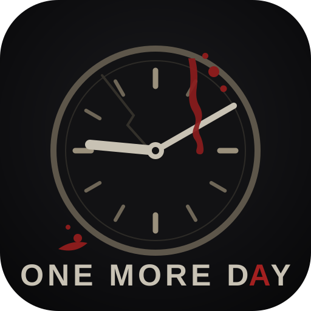

Installer One More Day sur ton téléphone
Le jeu tourne sur ce PC et se joue depuis le téléphone, sur le même Wi-Fi.
Une fois installé, il fonctionne hors-ligne, comme une vraie application, avec son icône.
recherche de l'adresse…
à taper dans Chrome, sur le téléphone
- Connecte le téléphone au même réseau Wi-Fi que ce PC.
- Ouvre Chrome sur le téléphone et tape l'adresse ci-dessus.
- Le jeu se charge. Ouvre le menu ⋮ (en haut à droite de Chrome).
- Touche « Ajouter à l'écran d'accueil » (ou « Installer l'application »).
- Valide : l'icône One More Day (l'horloge arrêtée) apparaît sur ton écran d'accueil.
- Lance le jeu depuis l'icône — plein écran, hors-ligne, sauvegarde sur le téléphone.
Si la page ne charge pas sur le téléphone : vérifie que le pare-feu Windows autorise
Node.js sur le réseau privé (une fenêtre l'a proposé au premier lancement), et que les deux appareils
sont bien sur le même Wi-Fi (pas le réseau « invité »).